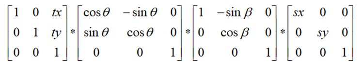

|
类型 |
变换 |
|
描述 |
获取2D变换矩阵的变换参数 计算2D齐次变换矩阵mat的仿射变换参数，参数描述了变换前后两坐标系是如何转换的。 sx、sy：表示变换前后坐标系x轴和y轴的缩放比例。 beta：表示变换后坐标轴y轴的错切角，即x轴固定不变，y轴顺时针旋转的角度。如果|beta| > 90°，则表示变换包含一个反射（即镜像）。 theta：表示变换前后x轴的旋转角度。 tx、ty：表示坐标系的平移。变换矩阵由以下变换参数按缩放、错切、旋转、平移的步骤生成  别名：ZV_AffineToParam |
|
语法 |
ZV_TkAffineToParam(mat,tabId)
参数： mat：ZVOBJECT类型，矩阵 tabId：输出参数的TABLE索引，分别为sx,sy,theta,beta,tx,ty，各参数含义如下： sx：x轴方向的缩放系数，大于0 sy：y轴方向的缩放系数，大于0 theta：x轴旋转角度 beta：轴错切角度，绝对值大于90°表示存在镜像 tx：x方向平移 ty：y方向平移 |
|
适用控制器 |
支持ZV功能或者5系列以上的控制器 |
|
例子 |
ZVOBJECT mat TABLE(0,1,0.2,0,0,1,0) '数据写入TABLE ZV_MatGenData(mat,2,3,0) '构建变换矩阵 ZV_TkAffineToParam(mat,10) '获取变换矩阵的变换参数 ?"变换参数:",TABLE(0),TABLE(1),TABLE(2),TABLE(3),TABLE(4),TABLE(5) |